2.6 Hardening Apache
1. Introducción
En este subcapítulo se trata un caso más especifico de fortificación sobre uno de los servidores web más utilizados en el mundo, el servidor web Apache.
El escenario de trabajo es el siguiente:
Equipo Ubuntu Server 20.04.3.
- Nombre: orion.
- Usuario con privilegios sudo y adm: administrador
- Interfaz de red enp0s3 con ip: 192.168.0.26.
2. Establecer un entorno apache
En este apartado se describe el proceso para establecer un entorno de Apache para que posteriormente se realicen ciertas pautas para configurarlo de modo seguro.
1. Instalación
Antes de instalar apache, hay que actualizar los repositorios.
administrador@orion:~$sudo apt update
Una vez actualizado los repositorios, se procede a la instalación de apache.
administrador@orion:~$sudo apt install apache2
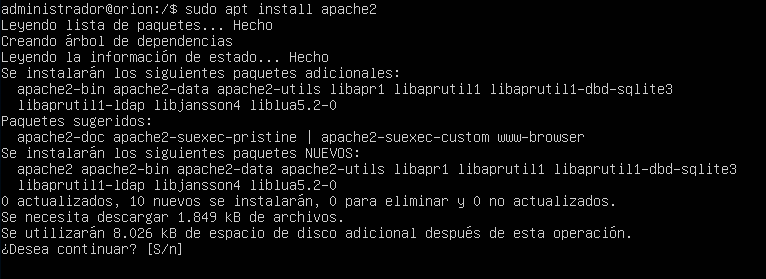
Figura 1. Instalación de apache.
2. Comprobación
Una vez instalado apache, se comprueba que se dispone del servicio en ejecución:
administrador@orion:~$service apache2 status
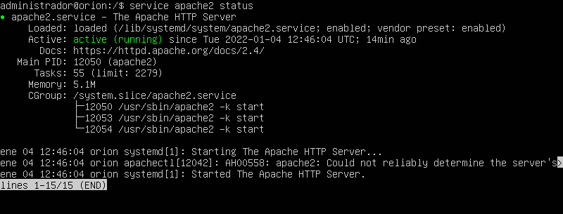
Figura 2. Comprobar el estado de apache.
3. Acceso a apache2 por http
Si se accede mediante el navegador de un equipo cliente (Linux mint 19) conectado en la misma subred que el servidor ubuntu server 20.04, se puede visualizar la página por defecto de Apache2:
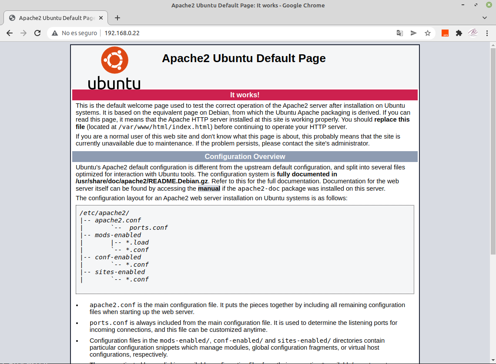
Figura 3. Página por defecto en apache.
4. Crear index.html
Una vez se disponga de la página web por defecto de la organización, hay que eliminar el archivo index.html como parte del proceso de Hardening ya que esta página dispone de rutas y configuraciones propias del servidor, para ello, se ejecuta el siguiente comando como root:
root@orion:/#echo “WEB - Mi Empresa S.L.“ > /var/www/html/index.html
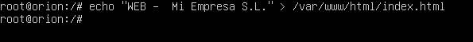
Figura 4. Página por defecto de la oranización.
5. Acceso a index.html
Si se accede a la página index.html, se tiene lo siguiente
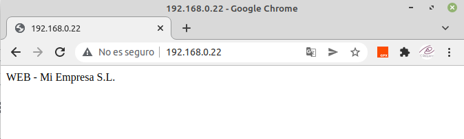
Figura 5. Acceso por navegador a la página de la oranización.
6. Ocultar versiones
El nombre de producto y versión del servidor Apache puede ser un punto de entrada para un atacante, preparando el terreno para utilizar un "exploit" que pueda ser funcional con la versión de la que se disponga. Desde el acceso anterior al servidor web, a través de la tecla F12 en el navegador se puede acceder al modo inspección del sitio web, donde se puede ver la información de la versión del servidor, para este caso de ejemplo, la versión de apache es la 2.4.41 (ubuntu) como se puede observar en la imagen inferior.
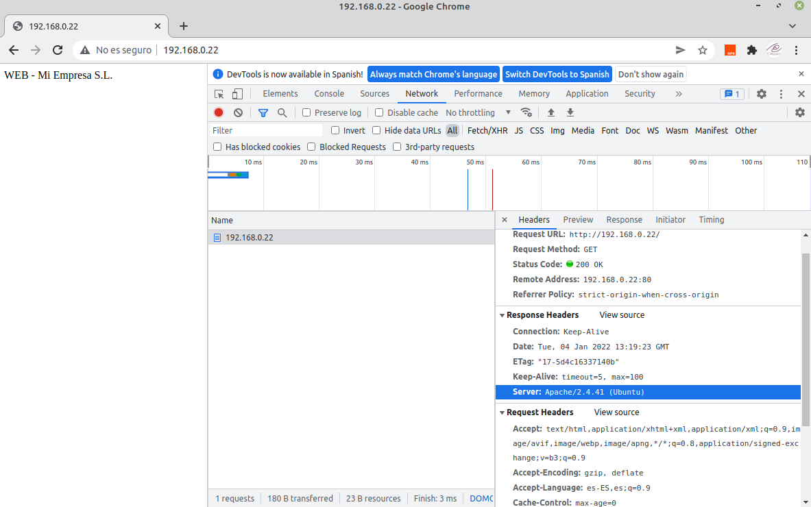
Figura 6. Consulta en modo inspección en Chrome.
Para evitar que se pueda acceder a la información relativa a la versión, hay que modificar 2 variables en el archivo de configuración de apache /etc/apache2/conf-enabled/security.conf y que son las siguientes:
- ServerTokens ProductOnly
- ServerSignature Off
En la imagen inferior, se puede observar cómo quedaría el fichero tras la modificación.
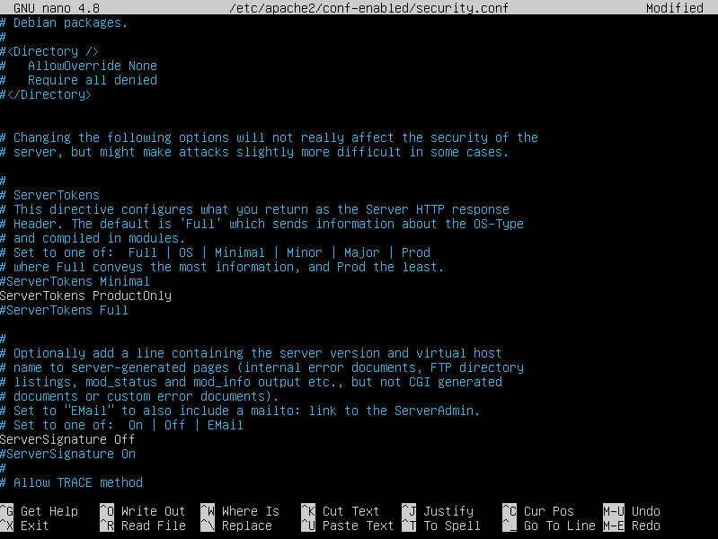
Figura 7. Fichero de configuración.
Para consolidar las modificaciones, hay que reiniciar el servicio.
root@orion:/# service apache2 restart
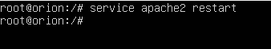
Figura 8. Reiniciar servicio apache2.
Una vez reiniciado el servicio, si se accede a la página index.html y se entra en modo depuración y se buscan de nuevo las cabeceras, se puede observar que no aparece la versión del servicio apache2.
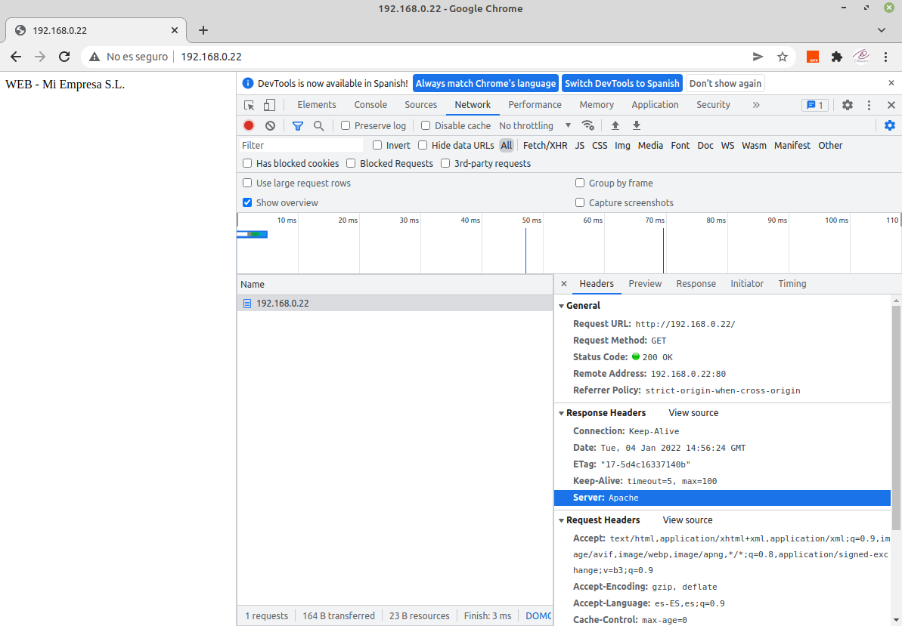
Figura 9. Consulta en modo inspección en Chrome.
3. Otras acciones
Además de la configuración anterior, se pueden aplicar otra serie de acciones que ayuden a mantener más seguro el servidor web, son las siguientes.
1. Restringiendo el acceso al contenido
En apache se disponen de módulos para restringir el acceso a directorios mediante el uso de usuario y contraseña. A continuación, se va a restringir el acceso a un directorio, en concreto, al directorio privado que se encuentra en /var/www/html.
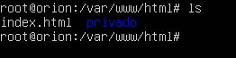
Figura 10. Listar el contenido del directorio html de apacher
En primer lugar, hay que crear un usuario y su contraseña, para ello, se utiliza el siguiente comando en la en la ruta /etc/apache2:
root@orion:/etc/apache2# htpasswd -c nombre_archivo usuario
De esta forma se creará una contraseña que se almacenará cifrada en el archivo que se ha definido. Como ejemplo, se crea el usuario administrador con el fichero passwords donde se almacenará la contraseña cifrada.
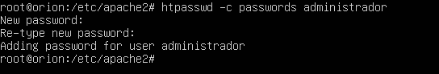
Figura 12. Creación de contraseña.
Si se visualiza el fichero de passwords, se puede observar que se ha creado una línea con el nombre de usuario y el password cifrado.
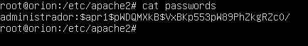
Figura 13. Consultar el fichero passwords.
A continuación, se definen las directivas Auth para el directorio, en nuestro caso privado. Para ello, se edita el fichero 000-default.conf que se encuentra en la ruta /etc/apache2/sites-enabled.
root@orion:/etc/apache2# nano sites-enabled/000-default.conf
Hay que especificar la directiva correspondiente al directorio en el archivo de la siguiente manera:
<VirtualHost *:80>
ServerName localhost
ServerAdmin webmaster@localhost
DocumentRoot /var/www/html
<Directory /var/www/html/privado>
Options +FollowSymLinks
AllowOverride None
#Directivas Auth
AuthType Basic
AuthName "Acceso Privado"
AuthBasicProvider file
AuthUserFile "/etc/apache2/passwords"
Require user administrador
</Directory>
</VirtualHost>
El fichero de configuración quedaría de la siguiente manera.
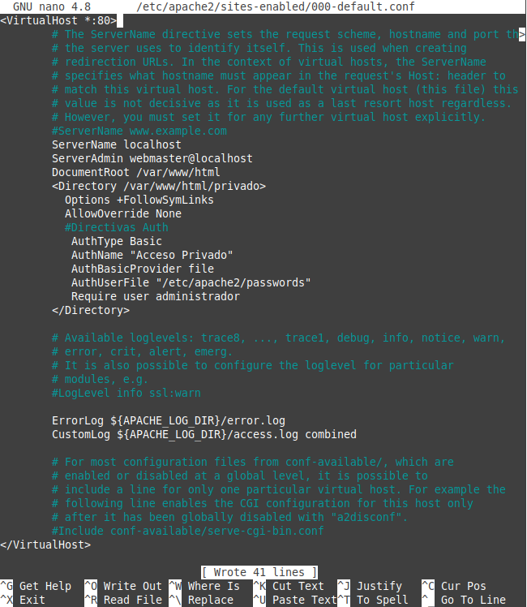
Figura 14. Edición del fichero 000-deafult.conf.
donde,
- Con AuthType se especifica el tipo de autenticación para poder acceder al recurso.
- Con AuthName se define la cabecera en el cuadro de diálogo de autenticación.
- Con AuthBasicProvider se define el archivo donde están almacenadas las claves de los usuarios. Es el archivo que se ha creado anteriormente (passwords).
- Con Require user usuario se especifica que sólo el usuario administrador pueda acceder al recurso.
Para consolidar las modificaciones, hay que reiniciar el servicio.
root@orion:/# service apache2 restart
Si todo ha ido bien, si se accede al directorio privado desde un navegador web, se solicita las credenciales de acceso al mismo (ver imagen inferior).
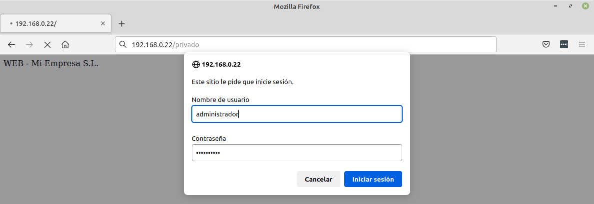Figura 15. Acceso al directorio privado en el servidor web.
Una vez ingresado las credenciales, si se pulsa el botón 'Iniciar sesión', se accede al directorio que se ha configurado para acceder a él.
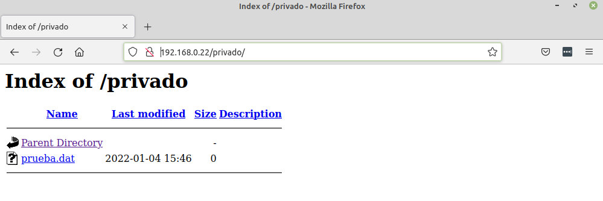
Figura 16. Consulta del directorio privado en el servidor web.
Obra publicada con Licencia Creative Commons Reconocimiento No comercial Compartir igual 4.0